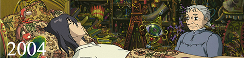

작품활동(作品活動)
바람계곡의 나우시카(風の谷のナウシカ)
천 년 전, 전쟁이 끝난 후 지구는 죽음의 행성으로 변했다. 점점 커지는 곰팡이의 숲 '부해(腐海)'가 유독가스를 내뿜어 사람이 살 수 있는 땅도 얼마 남지 않았다. 자연과 대화를 나눌 수 있는 특별한 소녀 나우시카는 깨끗한 바람계곡에서 살고 있었지만 부해는 이 곳 마저 먹어 치울 듯 가깝게 다가 온다. 나우시카는 사실 부해가 지구를 정화하고 있었다는 것을 깨닫고 사람들에게 진실을 알리려 하지만...
천공의 성 라퓨타(天空の城ラピュタ)
산골 마을의 탄광에서 일하던 소년 '파즈'는 어느날 하늘에서 기절한 채 서서히 떠내려오는 소녀를 만나게 된다 '시타'라는 이름의 그 신비한 소녀는 '비행석'이라는 돌을 지니고 있었는데 우연한 만남을 계기로 '파즈는' '시타'와 관련된 모험에 휘말리게 되는데.. 비행석을 찾기위해 시타를 쫓는 사람들이 모두 탄광촌에 나타난다. 그들은 해적'도라'일당과 군부관련의 '무스카'일당이었는데 결국 시타와 파츠는 '무스카'에게 잡히고 만다. 시타를 구출하기위한 모험이 이제 시작된다..
.gif)
이웃집 토토로(となりのトトロ)
도시를 떠나 시골로 이사 온 ‘사츠키’와 ‘메이’는 우연히 숲속에 살고 있는 신비로운 생명체 ‘토토로’를 만나 신비한 모험을 함께 한다.
그러던 어느 날, 어머니의 병원에서 위태로운 소식이 도착하고 언니 ‘사츠키’가 정신없이 아빠에게 연락을 취하는 와중에 ‘메이’가 행방불명 되는데…
마녀 배달부 키키(魔女の宅急便)
마녀 엄마와 인간 아빠 사이에서 태어난 소녀 `키키`는 13살이 되던 만월의 어느 밤, 검은 고양이 `지지`와 함께 마녀 수업을 떠난다.
바닷가 어느 마을에 추락한 `키키`는 마음씨 좋은 아주머니 `오소노`를 만나 첫 마녀 수업(배달 일)을 시작한다.
하지만 어느 날, 갑자기 마법의 능력을 잃게 되는데.. 과연 `키키`는 마법의 힘을 되찾고 진정한 마녀가 될 수 있을까?
추억은 방울방울(おもひでぽろぽろ)
도시에서 태어나 자란 탓에 농촌에 대한 동경을 가지고 있는 27살 타에코는 10일간의 여름휴가를 이용해 시골에 내려간다. 그 곳 사람들과 어울리며, 타에코는 초등학교 5학년 어린 시절의 추억을 회상하게 되면서 자신이 무엇을 원하고 바라는지를 알게 되는데…
붉은돼지(紅の豚)
제1차 세계대전이 끝난 후, 전쟁의 기억을 지우기 위해 스스로 돼지로 변한 비행사 '포르코'는 이탈리아의 무인도에서 혼자 지내며 하늘의 해적을 소탕한다. 사람들로부터 붉은 돼지로 불리는 포르코는 미국 조종사의 공격으로 비행기가 파손되자 피콜로에게 수리를 요청한다. 피콜로의 손녀인 '피오'는 포르코와 함께 온갖 모험을 겪으며 그를 좋아하게 되는데...
폼포코 너구리 대작전(平成狸合戦ポンポコ)
맘 『 고생 심한 너구리들의 인간 연구 프로젝트가 시작된다! 』
토록 기다리던 전설의 장로 너구리 셋이 시코쿠 지방에서 온다. 시코쿠의 세 장로는 너구리 변신학을 집대성한 『요괴대작전』을 실행할 것을 선언한다.
이 작전은 인간들로 하여금 다시 너구리에 대한 존경과 경외심을 품도록 함으로써, “뉴타운 개발 계획을 백지화” 하도록 하려는 것이다.
자! 과연!! 이후, 이들의 작전은 어떻게 진행될 것인가?!
너구리들의 유쾌, 상쾌, 통쾌한 ‘내 땅 지키기’ 대작전!!
.gif)
귀를 기울이면(耳をすませば)

내 이름은 `시즈쿠`. 중학교 3학년 졸업반이에요. 요즘 한가지 고민이 생겼어요. 최근에 빌려보던 책의 대출카드 마다 `세이지`란 이름이 적혀있는 거 있죠? 나도 모르게 자꾸만 그 사람이 신경 쓰여요. 그런데 얼마 전 신기한 골동품 가게에 들렀다 웬 남자 애를 만났어요. 그 애가 `세이지`였고 얼마 후면 이탈리아로 유학을 떠난대요. 이제 겨우 `세이지`를 만났는데, 전 어떻게 하죠?
모노노케 히메(もののけ姫)
저주를 풀기 위한 여행이 시작된다.』
대자연을 짓밟아서 자신의 터전을 넓히려는 인간들과 인간의 욕심때문에 분노의 재앙신으로 변한 대자연의 신들과의 처절한 사투. 그 전쟁에서 자연의 편에 선 '원령공주'와 그녀의 목숨을 구하기 위해 숲으로 들어온 '아시타카'의 이야기
센과 치히로의 행방불명(千と千尋の神隠し)
이사 가던 날, 수상한 터널을 지나자 인간에게는 금지된 신들의 세계로 오게 된 '치히로'... 겁에 질린 치히로에게 다가온 정체불명의 소년 '하쿠'. 그의 따뜻한 말에 힘을 얻은 치히로는 인간 세계로 돌아가기 위해 사상 초유의 미션을 시작하는데…
고양이의 보은(猫の恩返し)
고양이가 되어 사는 것도 재미있겠는걸...” 』
고양이 나라에서의 편한 생활에 우쭐해진 '하루'는 고양이 나라에서 그냥 눌러 살아도 좋을것 같다는 생각을 한다. 그러자 갑자기 그녀의 몸은 고양이로 변해가기 시작한다. 해 뜨기 전에 이 세계를 빠져나가지 않으면 완전히 고양이가 되어버릴 처지에 놓인 하루의 앞에 '고양이 남작'이 다시 나타나는데....
하울의 움직이는 성(ハウルの動く城)

마녀의 저주로 인해 할머니가 된 소녀 ‘소피’ 』
절망 속에서 길을 걷다가 거대한 마법의 성에 들어가게 된다. 그곳에서 자신과 마법사 하울의 계약을 깨주면 저주를 풀어주겠다는 불꽃 악마 ‘캘시퍼’의 제안을 받고 청소부가 되어 ‘움직이는 성’에 머물게 되는데…
벼랑 위의 포뇨(崖の上のポニョ)
사랑을 찾기 위한 좌충우돌 모험이 시작된다! 』
포뇨, 해파리를 타고 바다를 가출하다!
호기심 많은 물고기 소녀 ‘포뇨’는 따분한 바다 생활에 싫증을 느끼고, 급기야 아빠 몰래 늘 동경하던 육지로 가출을 감행한다. 해파리를 타고 육지로 올라온 ‘포뇨’는 그물에 휩쓸려 유리병 속에 갇히는 위기에 처하게 된다. 포뇨, 바닷가 소년 소스케를 만나다!
때마침 해변가에 놀러 나온 소년 ‘소스케’의 도움으로 구출되는 포뇨. 이후 소스케가 마련해 준 초록 양동이에서 소스케와의 즐거운 육지 생활을 시작한다. 하지만 곧 바다의 주인이자 포뇨의 아빠인 ‘후지모토’에 의해 ‘포뇨’는 다시 바다로 끌려가게 된다. 우여곡절 끝에 여동생들의 도움으로 탈출에 성공한 ‘포뇨’는 거대한 파도와 함께 ‘소스케’에게로 향하는데…
과연 포뇨는 이 난관을 뚫고 소스케와 다시 만날 수 있을 것인가?
마루 밑 아리에티(借りぐらしのアリエッティ)
교외에 위치한 오래된 저택의 마루 밑에는 인간들의 물건을 몰래 빌려 쓰며 살아가는 소인들이 살고 있다. 그들 세계의 철칙은 인간에게 정체를 들키면 그 집을 당장 떠나야 한다는 것! 14살이 된 10cm 소녀 아리에티는 부모님의 도움 없이 홀로 마루 위 인간 세상으로 뛰어든다. 빨래집게로 머리를 질끈 묶으면 작업 준비 완료!
작업 첫 날, 인간 소년 쇼우에게 정체를 들키다!
첫 작업 목표는 각설탕. 생쥐와 바퀴벌레의 방해 공작에도 무사히 주방에서 각설탕을 손에 넣은 아리에티는 두 번째 목표인 티슈를 얻으러 간 방에서 저택에 요양을 온 인간 소년 쇼우의 눈에 띄게 된다. 인간은 무서운 존재라고 생각했던 것과 달리 쇼우의 다정한 모습에 조금씩 마음을 열기 시작한 아리에티. 마루 밑 세계의 규칙을 어기고 쇼우에게 다가가던 어느 날, 아리에티 가족에게 예기치 않은 위험이 찾아온다.
인간들의 눈에 띄어서는 안되는 마루 밑 세계!
규칙을 어기고 인간 세상에 뛰어든 아리에티의 모험이 시작된다!
코쿠리코 언덕에서(コクリコの坂から)
항구가 보이는 언덕에서 코쿠리코 하숙집을 운영하는 열여섯 소녀 '우미'는 바다에서 돌아가신 아버지를 생각하며 매일 아침 안전한 항해를 기원하는 깃발을 올린다. 그 깃발을 매일 바다 위에서 바라보는 열일곱 소년 '슌'. 한편, 낡은 것을 모두 부수고 새로운 것으로 바꾸자는 사회적인 움직임과 함께, '우미'의 고등학교에서도 오래된 동아리 건물의 철거를 두고 갈등이 일어난다. '우미'와 '슌'은 낡았지만 역사와 추억이 깃든 건물을 지키기 위해 친구들과 함께 보존운동을 시작하고, 두 사람은 이를 계기로 서로에게 서서히 끌리기 시작하는데...
2011년 9월, 그때의 떨림이 다시 살아납니다
바람이 분다(風立ちぬ)
`잊 수 없어요. 바람이 당신을 데려온 그 순간을`
하늘을 동경한 소년, '지로' 열차 안에서 바람에 날아가는 모자를 잡아준 한 소녀를 만난다. 그러나 지진으로 긴박한 상황이 벌어지고, 서로 이름도 모른 채 헤어지게 된다. `당신을 다시 만나게 해달라고, 간절히 빌었어요`
소년의 꿈까지도 사랑한 소녀, '나호코' 10년 뒤, 지로와 나호코는 바람과 함께 운명적으로 다시 만난다 그러나 행복한 시간도 잠시, 두 사람에게 시간이 얼마 남지 않았음을 알게 되는데…
추억의 마니(思い出のマーニー)
공개되는 비밀스러운 감동 판타지! 』
12살 소녀 ‘안나’는 요양차 방문한 바닷가 마을에서 어디서 본 듯한 낡은 저택을 발견한다. 아무도 살지 않는 듯 보이는 그 곳에서 안나는 금발의 아름다운 소녀 ‘마니’를 만나게 되고....
“저 저택..어디서 본 것 같아!”
‘안나’는 ‘마니’의 초대로 저택의 파티에 참가하지만 신기하게도 다음날 낮에 찾아간 저택은 아무도 살지 않은 폐가가 되어 있다. 그 이후로도 안나와 마니는 함께 시간을 보내지만 알 수 없는 일들이 자꾸 일어나는데...
“이건, 마니의 일기야!”
그러던 어느 날! 갑자기 마니는 사라져 버리고 낡은 저택에 새롭게 이사온 소녀 사야카는 자신의 방에서 우연히 마니의 일기장을 찾게 된다. 안나와 사야카는 상상조차 할 수 없었던 놀라운 이야기를 발견하게 되는데...,
과연 낡은 저택에 얽힌 비밀은 무엇이며, 신비한 소녀 마니의 정체는?